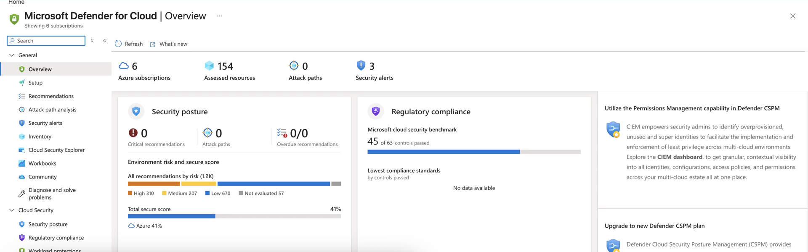

AZ-500 / SC-100 · Foundations
Cloud Adoption
Framework — Secure
Security is not a stage you reach later. The Secure methodology is the thread that runs through every phase of the cloud-adoption lifecycle — and the landing zones every workload lands in.
ASSESS → SECURE → SUSTAIN
The CAF mapNETWORK INTELLIGENCE · FOUNDATIONS
Seven methodologies — Secure runs through all of them
A roadmap for the whole adoption lifecycle
STRATEGY
PLAN
READY
ADOPT
GOVERN
SECURE
MANAGE
- Foundational and sequential — Strategy, Plan, Ready, Adopt: define outcomes, build the plan, prepare landing zones, then migrate and innovate.
- Operational and parallel — Govern, Secure, Manage: once workloads run, these continue without end.
- Secure is methodology six — operational and continuous — yet its guidance applies across all phases. A gap in strategy or readiness weakens posture as much as a gap in operations.
The Secure methodologyNETWORK INTELLIGENCE · FOUNDATIONS
Four recurring themes, hardening the landing zone
Risk → strategy → controls, every phase
1
Modernize posture
Identity strengthening, segmentation, just-in-time access, baseline automation — validated by secure score.
→
2
Prepare & respond
The full incident lifecycle: readiness, detection, containment, recovery, and post-incident learning.
→
3
CIA triad
Map controls to Confidentiality, Integrity, Availability — not encryption alone.
Sustain posture is the fourth theme — the disciplined cycle of measure, remediate, and validate, feeding retrospectives back into the backlog. All four harden the landing zone, so security is built in, not bolted on.
Posture sustainmentNETWORK INTELLIGENCE · FOUNDATIONS
Continuous security improvement, measured
The cycle the Secure methodology drives
Grounded · AZ-500 · Defender for Cloud
Posture is the running scoreboard
The Secure methodology validates through policy, infrastructure as code, continuous compliance scanning, and secure score. Here the Microsoft cloud security benchmark shows controls passed feeding directly into the score.
This is sustain posture made concrete — measure, remediate, re-measure, without end.
portal.azure.com — Microsoft Defender for Cloud · Overview

How it relates to the other frameworksNETWORK INTELLIGENCE · FOUNDATIONS
The connective tissue Domain 1 tests
Zero Trust is the strategy; CAF is the journey
- Zero Trust = the strategy and principles — CAF Secure sequences it across the lifecycle and bakes it into landing zones.
- MCRA = the picture — the reference architecture of Microsoft capabilities across the estate.
- MCSB = the checklist — the prescriptive controls you measure against in Defender for Cloud.
- WAF = the workload lens — the security design of one specific workload.
- CAF Secure = the journey — security across the whole adoption lifecycle and the landing zones every workload lands in.
CAF Secure ≠ WAF. CAF governs security across the organization's adoption lifecycle and platform; WAF governs the design of a single workload.
SC-100 · Domain 1NETWORK INTELLIGENCE · FOUNDATIONS
Landing zones & DevSecOps are first-class objectives
How the exam tests CAF Secure
- Design — or evaluate — a strategy for security and governance based on CAF and WAF.
- Design solutions for implementing and governing security using Azure landing zones — secure by design, hardened at the Ready phase.
- Design a DevSecOps process aligned with CAF — infrastructure as code, policy as code, continuous compliance, so controls travel with the workload.
- Remember the traps: CAF Secure is not a one-time phase, it is not the WAF Security pillar, and it aligns to Zero Trust rather than replacing it.
RememberNETWORK INTELLIGENCE · FOUNDATIONS
The Cloud Adoption Framework — Secure in five rules
Security across the whole journey
- 1 · CAF is the whole adoption lifecycle; Secure is a thread across every phase, not a stage reached later.
- 2 · Seven methodologies — foundational and sequential versus operational and parallel; Secure is methodology six.
- 3 · Four themes: modernize posture, prepare and respond, the CIA triad, and sustain posture.
- 4 · It hardens secure-by-design landing zones and embeds DevSecOps in the pipeline.
- 5 · Among the frameworks it is the journey — and it aligns to Zero Trust, not replaces it.
Hands-on · 1 of 2NETWORK INTELLIGENCE · FOUNDATIONS
Do this
Map your org to the Secure phases
GOAL · Turn the methodology map into a backlog
- Place your organization on the seven-methodology map — Strategy through Manage.
- For the phase you are in, name one task under each Secure theme: posture modernization, incident readiness, a CIA-triad control, and a sustainment metric.
- The gaps you cannot fill are your backlog.
✓ DONE WHEN · You have one named task per theme and a written list of gaps
Hands-on · 2 of 2NETWORK INTELLIGENCE · FOUNDATIONS
Do this
Audit one landing zone
GOAL · Prove security is built in, not bolted on
- Take an existing Azure landing zone and check it against the modernization theme: identity strengthening, segmentation, just-in-time and least-privilege access, baseline automation.
- Confirm secure-score tracking in Defender for Cloud is active for it.
- Record the single highest-leverage gap.
✓ DONE WHEN · One landing zone is scored against the baselines and its top gap is written down